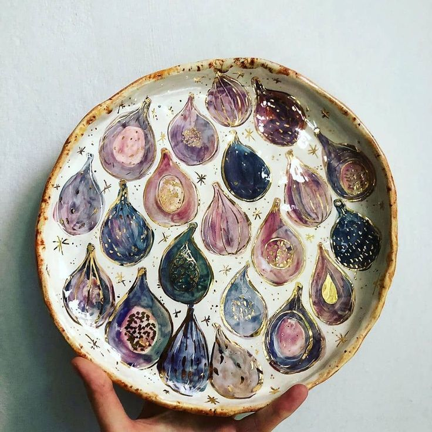

ОПИСАНИЕ:
Эта тарелка — больше, чем просто посуда. Это маленькая история, запечатлённая в глине. Авторская роспись вдохновлена теплом средиземноморского солнца и дарами щедрого сада. Инжир, символ изобилия и мудрости, привнесёт в ваш дом уют и природную гармонию. Каждый плод выписан вручную, что делает это изделие уникальным. Тарелка станет изюминкой вашего стола, создаст уютное настроение на кухне или послужит изысканным самостоятельным декором. Прекрасный подарок для ценителей ручной работы и натуральной эстетики.
ВАМ ПОНРАВИТСЯ:
• Эксклюзивность: Каждый мазок — авторский, вы получаете изделие в единственном экземпляре.
• Эстетика: Тёплая, «вкусная» палитра украсит любой стол и интерьер.
• Эмоция: Дарит ощущение натуральности, спокойствия и связи с природой.
ВАЖНЫЕ ХАРАКТЕРИСТИКИ:
- Материал: белая глина, безопасные глазури и краски.
- Техника: ручная лепка, подглазурная роспись.
- Размер: диаметр Ø26 см.
- Назначение: для сервировки (фрукты, десерты, закуски) или как декоративный элемент.
- Особенности: нельзя использовать в микроволновой печи и посудомоечной машине из-за наличия золочёных элементов.